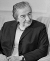

Batı dünyasının ilk kadın başbakanı olan Golda Meir (1898–1978) 1969 ve 1974 yılları arasında İsrail’i yönetti. Görevde olduğu sürede ülkesi pek çok zorlukla karşılaştı. İsrailli atletler Münih’teki 1972 Olimpiyat Oyunları’nda katledilmiş ve Yom Kippur Savaşı (1973) yaşanmıştı.
Hem dostları hem de düşmanları onu ciddi, akılcı tavrıyla tanımaktadırlar. Müstehzi bir mizah anlayışı vardı. Siyonist projeye tutkuyla bağlıydı. Bir Yahudi devletinin kuruluşuna ömrünü adamıştı. Onun bağımsızlığının korunması için de aynı adanmışlıkla çalışacaktı.

Meir, Ukrayna’da doğdu. O dönemde Ukrayna, Çarlık Rusyası’nın bir parçasıydı. Ailesi 1906 yılında yoksulluktan ve anti semitimizden kurtulmak için ABD’ye gitti ve Milwakuee’ye yerleşti. Burada İngilizce öğrendi ve ailesinin bir bakkal dükkanı açmasına yardımcı oldu. Lisede Siyonist bir gençlik organizasyonuna katıldı. 1921 yılında Filistin’e gitti.
Filistin’e gittikten sonra bir kolektif çiftlikte çalışmaya başladı. Daha sonra emek konsilinde görev aldı. ABD ve Avrupa’yı gezerek Yahudi yerleşimciler yararına ve Siyonizm davası adına yardım topladı.
II. Dünya Savaşı ve Yahudi Soykırımı, Yahudi devletinin kuruluş sürecini hızlandırdı. 1948 yılında İsrail bağımsızlığını ilan etti. Meir, İsrail Bağımsızlık Bildirgesi’nin yirmi beş imzacısı arasındaydı. Yeni ulusun ilk pasaportunu aldı.
1949 yılında İsrail meclisi Knesset’e üye seçildi. 1956 ve 1966 yılları arasında dış işleri bakanlığı yaptı. Daha sonra sağlık nedenlerinden dolayı emekli oldu. 1966 yılında Mapai Partisi’nin sekreteri olarak politikaya geri döndü. 1969 yılında ölen başbakan Levi Eshkol’un (1895–1969) yerine geçti.
Meir’in görev süresinde en önemli mesele İsrail ve Arap komşuları arasındaki sorunlardı. Kara Eylül Filistin Örgütü tarafından İsrail’in Olimpiyat atletlerine yapılan saldırı önemli bir sorun olarak ortaya çıktı. Meir’in Yom Kippur Savaşı’ndaki rolü eleştiri konusu oldu. İsrail, Arap saldırılarına hazırlıksız yakalanmıştı. Buna rağmen, Mısır ve Suriye ordularını üç hafta içinde yenmeyi başardı.
Meir sonraki yıl savaştaki performasına ilişkin tartışmaların ardından yeniden emekli oldu. Dört yıl sonra seksen yaşındayken öldü.
Ek Bilgiler
1- Meir, İsrail’in Sovyetler Birliği’ndeki ilk elçisiydi.
2- Meir’in hayatını anlatan “Golda” oyununda Anne Bancroft (1931–2005) başrolde oynuyordu. Oyun, 1977 yılında Broadway’de sahnelendi.
3- Meir, 2005 yapımı Steven Spielberg (1946–) filmi Münih’te Lynn Cohen tarafından canlandırılmıştı. Film İsrail’in Münih saldırılarının intikamını nasıl aldığını anlatıyordu.